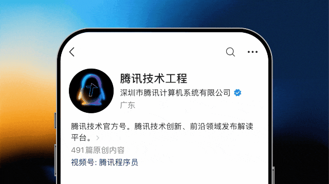

当执行能力趋于充裕，组织如何重建信息流动与经验继承
Coding Agent 正在快速扩大一个人的工作边界，但企业研发的瓶颈并没有因此自动消失。任务一旦跨越成员、Session、代码分支和权限域，真正稀缺的往往不是生成代码的能力，而是“协作的带宽”。本文从 OPC、协作带宽和孙天祥提出的三层 AI 组织架构出发，重点介绍 TencentDB Agent Memory 在团队记忆上的工程实践：我们如何把任务轨迹、项目知识、代码结构和工作方法转成可治理的记忆资产，如何从 2,600 个 Session、Redis 真实研发 Case 和访谈中校正产品设计，以及如何用“前序 Case 学习、后序 Case 验证”的方式，在 SWE-bench 相关任务上观察到完成率从 60% 提升到 80%；在 Top 50 超长难任务中降低19%成本的同时提升了成功率。
全文导航

1. 问题定义：执行能力增长，协作带宽没有同步增长
过去一段时间，我们在做 Agent Memory 的过程中反复看到一个反差：模型越来越强，一个人带着 Agent 推进任务的速度越来越快；但任务一旦进入多人、多 Agent、多项目的环境，真正拖慢交付的往往不再是“这段代码能不能生成”，而是信息能不能在成员、Session、代码分支和权限域之间被准确继承。
一个人与自己的 Agent 通常共享同一个任务现场。目标是什么、刚才试过什么、为什么放弃某个方案，都还留在当前上下文里。可一旦换人或换 Agent，交接往往只剩下一句结论、一个文件或一段 Diff。对方（或者未来的自己）看到了结果，却没有得到形成结果所依赖的背景、约束和判断过程；信息明明存在，任务仍然需要从头理解。
这也是我们对信息协作带宽最直接的洞察：组织缺少的通常不是更多消息，而是在正确权限边界内，能够被相关人或 Agent 正确理解并直接用于任务的有效上下文。AI 降低了执行成本，却没有自动提高这种带宽。执行越快，背景丢失、重复探索和分支冲突带来的损耗反而越明显。
1.1 OPC 为什么成为一个重要观察样本
本文所说的 OPC（One-Person Company），是一种 AI Native 的组织模型：一名核心决策者带着多个 Agent，把研究、开发、内容和运营拆给不同的数字能力，再由自己完成目标设定、判断和验收。
它在今天受到关注，首先因为 Agent 正在扩大个人可执行任务的边界。METR 对前沿模型任务完成时间跨度的测量显示，在以软件工程、机器学习和网络安全为主的自包含任务中，模型以 50% 概率完成的任务跨度长期大约每 7 个月翻倍。Anthropic 对约 40 万次 Claude Code 交互会话的隐私保护分析也显示，GitHub 项目中的 Coding Agent 活动自 2025 年末以来增长超过一倍，相关用户平均每周使用约 20 小时。单一厂商的数据不能代表整个行业，但可以说明 Agent 正从偶发工具变成一部分人的持续工作界面。
OPC 的效率也不只来自“一个人能做更多”，还来自低交接、低隔离和目标集中。Carta 的创业公司样本显示，2025 年成立的公司中约 36% 由单一创始人领导，高于 2024 年的 31%。这不能证明成熟的 OPC 已经普遍出现，却提供了一个值得研究的方向：当个人能够调用的执行能力快速增加，组织可以在更少的人际接口下完成更多工作。
OPC 并没有消灭协作，而是把大量人际协作改写成一个人与多个 Agent 在共享上下文中的协作。它展示了 AI Native 执行的一个上限，但不是企业可以原样复制的模板。
1.2 企业规模增加的首先是边界
企业与 OPC 的差异，不只是人数更多。一个真实团队还要同时处理角色分工、项目隔离、分支版本、数据安全和责任追溯。我们可以把协作成本简化为：
协作成本 ≈ 交接次数 × 单次交接成本
+ 冲突消解成本
+ 权限与合规成本
这个公式不是财务模型，而是帮助我们区分三件经常混在一起的事：信息是否找得到，拿到后是否能理解，以及理解后是否有权使用。会议、群聊和文档数量都不是带宽本身。只有信息完整、来源可信、版本适用，并且能够进入当前任务，它才构成有效上下文。
最危险的情况往往不是两个人有明显相反的习惯，而是工作分支上存在细微、却可能是毁灭性的差别。例如两份部署 Skill 的描述和步骤高度相似，一个环境读取 config/prod/，另一个分支实际使用 conf/prod/；又或者两份测试流程都在调整同一个参数，一份乘以 0.5，另一份乘以 2。如果系统只按语义相似度选择“质量最高”的资产，它可能流畅地执行完整流程，却把文件写入错误目录、污染错误环境，甚至导致服务不可用。
因此，我们给协作带宽一个更严格的操作性定义：
协作带宽，是单位时间内，能够在正确权限边界下，被相关人或 Agent 正确理解并直接用于任务的有效上下文

1.3 从“AI 版 GitHub”到三层 AI 组织架构
近期，红杉汇发布了日行迹智能（Analemma）创始人孙天祥的演讲《任何错误只犯一次，AI 时代，要把公司变成 GitHub 模式》。围绕同一观点整理的公众号文章《不是员工不愿协作，是人和人的带宽太小了》，提出了一个很有启发的组织隐喻：每个人像在自己的 branch 中高内聚地工作，到合适的时候再 merge；另一个人的 Agent 可以直接理解工作轨迹，团队已经验证过的 use case 不必重新试错。
演讲把 AI Native 组织分为三层：顶层是管理与资源配置，中间层是人和 AI 共同工作的现场，底层是由 shared skill、trajectory 和 substrate 组成的共享基底。我们认为这个方向成立，但企业落地不能只取 branch 的比喻，而忽略 GitHub 真正支撑多人协作的版本、权限、Review、合并、冲突处理和回滚。原始轨迹可能包含密钥、客户数据、无效尝试和未经确认的判断；轨迹可见，不等于结论可信，更不等于所有人都应该看到。
所以，我们对三层架构的翻译是：上层治理信息边界，中层承接真实任务，底层保存可继承的组织资产。三层不是三个孤立页面，而是一条从任务到资产、再回到任务的信息链路。

1.4 Spec 为什么会火：Agent 时代需要可溯源的任务状态
三层架构给出了组织层面的方向，Spec-driven Development 的流行则提供了一个更直接的研发信号：当 Agent 的实现速度越来越快，任务中最花时间的工作正在从“如何写出代码”，转向“怎样准确表达意图、约束、方案和验收标准”以及“留存任务资产”。
GitHub Spec Kit 把任务组织为：
Specify → Plan → Tasks → Implement
需求与约束 → 技术方案 → 可执行任务 → 实现与验证
Spec Kit 将 Spec 视为持续更新的共享事实来源，而不是开发前写完、随后失效的静态文档。它之所以受到关注，并不是因为团队突然更愿意写文档，而是因为 Agent 放大了模糊输入的代价：目标少一个边界，Agent 可能快速生成一整套错误实现；验收标准不清楚，代码写得越快，后续设计评审和 Code Review 的返工越多。
Spec 的流行实际上说明了四类需求正在变强：人的意图需要被机器准确理解；方案和约束需要从聊天框中外显；任务状态需要跨 Session、跨 Agent 延续；评审需要依据明确契约，而不是只从最终 Diff 反推背景。它把一次任务从临时对话转成了相对结构化、可检查的工作对象。
但 Spec 仍然主要服务当前任务。它可以说明这一次准备怎样做，却不会自动回答：类似问题过去是否发生过，某个历史方案为什么被放弃，哪个模块曾经出现过同类故障，当前 Spec 是否与另一条分支上的规则冲突，以及这些信息是否有权限进入当前任务。Spec 也不会天然管理来源、版本、新鲜度和负反馈，更不会把一次任务中验证过的方法自动路由给未来相关任务。
因此，Spec 和团队记忆解决的是前后相接的两个问题：Spec 让一次任务的状态变得可表达，团队记忆让经过验证的任务状态变得可继承。前者证明了结构化上下文的需求，后者要补上跨任务复用与企业治理。

这正是 TencentDB Agent Memory 试图解决的问题。
2. TencentDB Agent Memory 的基本结构
2.1 不是保存更多聊天，而是让下一次任务少走弯路
Spec 的流行说明，Agent 需要结构化任务状态；它的边界也说明，仅仅把当前任务写清楚还不够。团队还需要把已经验证过的状态从一次任务带到下一次任务，并在共享过程中处理权限、版本、冲突与失效。TencentDB Agent Memory 就从这个缺口出发。
我们对团队记忆的定义是：
把团队在真实任务中产生的背景、知识、代码关系和工作方法，转化为可检索、可组合、可追溯、可授权、可持续更新的 Agent 资产，并在后续任务中按需装配。
它不是无限保存聊天记录，也不只是给现有知识库增加一个向量索引。传统 RAG 更关注“从语料中能找到什么”，团队记忆还必须回答“这条信息属于谁、在哪个版本成立、谁有权使用、应该装配给哪个 Agent、用后如何修正”。它要管理的不只是文本相似度，而是信息从产生、抽象、审核、调用到失效的完整生命周期。
我们的产品链路可以概括为：

这条链路对应了三层架构：Memory Hub 承担治理和调度，Memory Pack 进入人和 Agent 的任务现场，四类 Memory Asset 构成可共享基底。我们不是先建一个巨大的知识池，再期待 Agent 自己找对信息；而是让完整资产留在池中，只把与当前身份、任务和权限相关的部分装配到上下文里。我们内部常用一句话概括：完整属于资产池，相关属于当前任务。
2.2 四类资产分别保存四种可继承状态
| 资产 | 主要保存什么 | 典型问题 | 任务中的作用 |
|---|---|---|---|
| Chat Memory | |||
| Wiki | |||
| CodeGraph | |||
| Skill |
四类资产不是四个平行的文档目录。一个故障修复任务可能先从 Chat Memory 获得历史背景，从 Wiki 读取架构约束，从 CodeGraph 确认影响范围，再由 Skill 执行排查和验证。它们共同回答“发生过什么、团队知道什么、代码如何关联、我们通常怎样做”。
四类资产也不是以同一种粒度进入任务。Chat Memory 内部继续保留从原始对话到稳定认知的层级，Wiki、CodeGraph 和 Skill 则通过摘要、绑定与工具入口逐步暴露。下一节具体说明这套分层装配逻辑。
2.3 资产如何进入任务：先缩小边界，再做相关性检索
我们没有把 Memory 设计成一个扁平的信息池。扁平召回的问题是，原始记录、抽象结论、固定规则和临时背景会同时竞争上下文；相似度最高的内容不一定最可信，也不一定适用于当前身份、分支和任务。为此，我们把“记忆如何形成”和“资产如何进入任务”都做成分层过程。
2.3.1 内容分层：从原始证据到稳定认知
Chat Memory 采用 L0→L1→L2→L3 的渐进式管线。每一层都是对上一层的提炼，但不会取代上一层：
| 层级 | 保存内容 | 信息特征 | 在任务中的作用 |
|---|---|---|---|
| L0 Conversation | |||
| L1 Atom | |||
| L2 Scenario | |||
| L3 Core / Persona |
这种设计同时保留了“可使用的抽象”和“可追溯的证据”。平时可以先用 L2、L3 建立语境；当任务需要确认具体事实时，再通过关键词、向量检索和来源锚点回到 L1、L0。高层记忆负责减少阅读量，低层记忆负责防止抽象在多轮总结后失真。
2.3.2 路由分层：从身份边界到 Context Bundle
内容分层解决“以什么粒度保存”，路由分层解决“这次任务究竟应该拿到什么”。我们的装配顺序不是对全库做一次相似度搜索，而是逐层缩小：
身份与作用域层：先确定 Team、User、Agent、Task、项目、可见性和 ACL。没有权限的资产不会进入候选池，而不是召回后再删除。
固定绑定层：角色规则、任务约束、指定 Wiki 或必需 Skill 等由人明确绑定的资产直接进入装配范围，它们表达的是组织事实，不应被一次相似度排序覆盖。
浮动召回层：在权限范围内，根据当前任务和请求意图补充历史 Memory、相关 Skill、Wiki 与 CodeGraph 候选。固定资产保证底线，浮动资产提供适应性。
相关性融合层：错误码、文件名和符号使用 BM25 等精确检索；意图、故障模式和相似任务使用向量检索；两路结果再通过 RRF 融合，避免只依赖一种相关性信号。
上下文装配层：按照角色、优先级、绑定方式、版本和 Token 预算生成 Memory Pack。任务期间还可以锁定资产版本，避免同一任务前后读取到不一致的规则。

2.3.3 渐进式暴露：先给入口，再按需展开
分层装配的最后一步，不是把选中的资产全部复制进 Prompt。Chat Memory 可以先提供场景摘要，再按需回到原始 Turn；Skill 可以先暴露名称、触发条件和用途，确定适用后再加载完整步骤和资源文件；Wiki 和 CodeGraph 只注入资源名称、Summary 和工具入口，Agent 先通过 /v3/tools/list 发现能力，再用 /v3/tools/call 读取相关页面、源码、调用者或影响路径。
这样，Prompt 承担的是“告诉 Agent 有什么、为什么可能有用”，工具调用承担的是“在需要时拿到细节”。它既避免把整库内容一次性塞入上下文，也让大资产的结构和工具 Schema 可以独立演进。整个过程还受到结果条数、单项长度、总字符数和超时限制。我们追求的不是召回越多越好，而是用尽量小的上下文，给当前任务一个足够可靠的起点。
2.4 资产跟着 Team 走，按任务组合
个人记忆解决的是“我和我的 Agent”之间的连续性，团队记忆解决的是组织经验的继承。这个差别决定了一个重要设计：资产不能跟着某个 Agent 走，而要跟着 Team 走。如果一段经验只能留在某个账号、某种对话格式或某个框架的内部缓存里，它更像私人缓存，还不是团队资产；一旦模型、Agent 或工作入口变化，团队又会回到原点。
所以我们强调框架中立，并不是为了同时兼容更多工具，而是因为只有从具体宿主中解耦，记忆才真正属于团队。Chat Memory、Wiki、CodeGraph 和 Skill 使用统一的资产模型，保留来源、Owner、Scope、Version、ACL、证据和状态；不同 Agent 再通过 Gateway、HTTP API、SDK 或工具接口读取与写回。Agent 可以决定如何规划、调用工具和执行任务，Memory 负责让它从团队已经知道的地方开始。
框架中立也不意味着把同一批内容交给所有 Agent。修 Bug 的任务更需要历史故障、CodeGraph 和排障 Skill，需求分析更需要 Wiki、Chat Memory 和业务约束。团队拥有完整资产池，每个角色和任务只获得当前真正需要的部分，也就是：完整属于资产池，相关属于当前任务。
这也是三层 AI 组织架构在产品里的连接方式：底层保存与框架解耦的团队资产，上层管理 Team、成员、Agent、权限、版本和生命周期，中间的人机任务现场获得一份按身份、目标和作用域装配的 Memory Pack。我们主要建设的是这套基础设施，让三层之间的信息可以流动，而不是替管理者做业务判断，也不规定 Agent 必须采用哪种工作流。
2.5 资产如何形成：让任务结果变成组织增量
团队记忆首先需要高质量输入。原始聊天中既有真实证据，也有临时猜测、重复表达和已经被推翻的路径。如果把整段轨迹直接作为长期 Memory，召回越多，噪声和冲突可能越大。
在工程上，我们把资产形成拆成四步：
证据切分：把 Session、文档和仓库内容切成可定位的 Task、Turn、页面、符号和提交，而不是只保留一段总结。
候选抽取：识别背景、决策、规则、代码关系、执行步骤、错误路径和验证结果，形成候选 Atom 或 Skill。
作用域绑定：补充 Owner、Team、Repo、Branch、Path、Version、Time、ACL 和来源证据。对企业任务来说，这些字段与正文内容同样重要。
验证后升级：未经验证的轨迹先作为低权重背景；能够被测试、提交或人工 Review 支持的内容，才逐步进入更稳定的场景记忆或共享 Skill。
任务结束后，新的背景、判断、代码关系、验证方法和负反馈会成为候选资产，经过审核后回到 Memory Hub。我们希望形成的是“干完有沉淀、换人不重来、开局就读档”：任务从资产池获得起点，执行结果再成为团队的组织增量。框架可以变化，但这条积累链不能随之清零。
所以，资产不是“模型总结得像不像”，而是证据、抽象、作用域和验证状态的组合。我们的判断标准始终是：它能否降低下一次任务的不确定性。
2.6 冷启动：让团队不必等几年才拥有资产
团队记忆不可能等几年后“自然长出来”。因此，冷启动同时支持三种入口：历史 Session 形成 Chat Memory 和 Skill，现有文档形成 Wiki，代码仓库形成 CodeGraph。新增任务再持续提供增量证据。
这也是 TencentDB Agent Memory 选择基础设施定位的原因：先接住团队已经存在的信息，把它们变成可以进入任务的资产；再让新的任务不断验证、修正和补充资产。团队记忆不是让 Agent 记住更多，而是让团队少从零开始。
2.7 一个任务怎样“读档”：Memory团队使用的完整案例
前面的资产和路由设计仍然比较抽象。我们换成 TencentDB Agent Memory 仓库里真实存在的一条代码链路：
Knowledge Service 通过 /v3/tools/list 让 Agent 发现 Wiki 和 CodeGraph 的可用工具，再通过 /v3/tools/call 执行只读查询。下面以为 CodeGraph 增加 impact 影响面查询为例，重建一次 Memory 团队内部 Coding 任务怎样“读档”。文中涉及的模块、接口和约束都来自当前仓库；任务过程是为了说明团队记忆使用方式而做的工程化重建，不对应某一位成员或某一次 Commit 的逐字复盘，也不额外声明尚未测量的效率收益。
这个需求真正的调用链更长：外部短名 impact 还要进入只读白名单，通过 toCodeGraphToolName() 映射成引擎能够识别的 codegraph_impact；MemoryKnowledge/src/routes/code-graph.ts 需要按照同一份工具清单注册直接查询路由，并校验 symbol、depth 等字段；最后再由 MemoryKnowledge/src/engines/code/bridge.ts 进入 CodeGraph 引擎。如果漏掉映射，Agent 能发现工具，调用时却会得到 403 unknown tool；如果绕开统一路由单独加接口，又可能漏掉 x-tdai-service-id 隔离、参数白名单和 ready 状态处理。它是非常典型的“局部修改正确，系统行为不完整”。
如果只有一个干净的新 Session，Coding Agent 必须先从仓库中重新拼出这些关系。它也许会依靠文件名找到 CODE_GRAPH_TOOLS，却不一定立即知道下面这些团队已经形成的约束：
Agent 只能调用查询工具，create、delete、sync 等管理操作不能进入工具白名单；
对外工具名使用 impact 这样的短名，进入引擎前统一映射为 codegraph_impact；
service_id 必须从 x-tdai-service-id 请求头获得，按资源 ID 查询时仍要带租户条件，跨租户访问返回 404；
CodeGraph 尚未达到 ready 状态时，查询返回安全的空结果，不能误用未完成的索引；
工具定义、直接路由、统一工具路由和 MCP 暴露面需要保持一致。
这些内容不会自然地同时出现在某一个源文件里：一部分在接口设计和 README 中，一部分在多租户改造的历史 Session 中，一部分以注释和类型约束留在代码中，还有一部分来自过去增加 search、explore、callers 等工具时形成的修改路径。团队记忆要做的，就是在任务开始时把它们组合成一份针对当前需求的 Memory Pack：
| 资产 | 在这个 Coding 任务中提供什么 | 避免什么问题 |
|---|---|---|
| Chat Memory | ||
| Wiki | ||
| CodeGraph | ||
| Skill |

有了这份 Memory Pack，Agent 在动代码前应该先给出一份仓库级计划，而不是直接编辑第一个搜索命中的数组：
在 routes/tools.ts 的工具定义中补充 impact(symbol, depth)，并确认它进入只读白名单；
复用 CODEGRAPH_QUERY_TOOL_NAMES，确保统一工具入口和 routes/code-graph.ts 注册的是同一集合；
检查 toCodeGraphToolName("impact") 是否得到 codegraph_impact，并由 bridge.ts 交给引擎；
保留 x-tdai-service-id 和资源归属校验，不允许只凭 code_graph_id 跨租户读取；
验证 symbol 必填、depth 范围、未知工具 403、跨租户 404、非 ready 安全返回，以及正常调用结果；
如果 Panel、SDK 或 MCP 需要直接暴露这项能力，再沿接口契约补齐类型和说明，而不是让各入口静默产生不同工具集。
| 任务阶段 | 没有团队记忆 | 使用团队记忆后的目标体感 |
|---|---|---|
这种体感更接近我们希望实现的团队记忆：它不是替研发多写几行 TypeScript，而是让 Coding Agent 在进入任务时已经知道“这个仓库为什么这样设计、修改必须跨过哪些文件、哪些安全边界不能破、最后怎样证明没有漏改”。同类价值还会出现在多租户字段改造、SDK 接口升级、Skill 版本冲突处理和数据迁移等任务中。它也有明确边界：如果任务是第一次出现的引擎 Bug，历史中没有相关证据，Memory 不能替代新的调试；如果历史规则已经过期，系统也必须依赖版本、来源和测试结果对其降权或撤回。
任何错误只犯一次：TencentDB Agent Memory 的团队记忆实践
3. 内部数据探索：从 2,600 个 Session 寻找可复用经验
3.1 Task-only 分析：先把“相关”与“可复用”拆开
为了判断历史任务里到底有没有能帮助未来任务的经验，我们设计了一套 Task-only 内部分析流程。研究问题不是“知识库里有多少条记录”，而是：
一个卡点发生之前，历史任务中是否已经存在可执行经验？如果当时把它提供给 Agent，这个卡点能否完全避免或部分减轻？
我们从 2,600 个原始 Session 中切分出 5,081 个 Task。Task 而不是 Session 是基本分析单元，因为一段长会话通常包含多个目标；如果直接在 Session 级别计算相似度，“同一个仓库”“同一位用户”会掩盖真正的问题关系。
候选关系由多类信号共同生成：语义向量，文件、目录和符号重叠，错误与陷阱，动作链和产物，以及时间和强锚点。第一轮共得到 48,114 个候选 Pair，筛选后保留 23,134 条，再进入严格二裁、独立重分类和原始 Turn 证据检查。Relation 只用于扩大召回，不能直接证明经验有效；任何高置信结论都必须能回到当时的原文，并且只能使用卡点发生前已经存在的信息。

3.2 “38%”真正说明了什么
早期分层抽样中，same_problem 标签的精确类型正确率是 38%，但这些样本中确实存在某种具体关系的比例达到 95%；reusable_sop 的精确类型正确率为 62%，存在具体关系的比例为 96%。
因此，38% 不是“38% 的知识可复用”。更准确的结论是：
模型比较容易发现两个任务有关系，却很难准确判断它们是同一个工作项、同一个问题，还是能够迁移的 SOP。关联不等于复用，复用也不等于可以直接执行。
在增加严格二裁、独立分类和机器可验证锚点后，我们得到 22,361 条 canonical Relation。其中只有 42 条 same_work_item、135 条 same_problem 和 54 条 reusable_sop 被保留为强关系，其余 22,130 条全部降为只参与召回的 related_context Shadow。三类强关系的抽样精确有效率分别为 95.24%、69.00% 和 83.33%。same_problem 比预设 70% 门槛少一个样本，我们选择把它保留为已知风险，而不是继续调整口径直到“看起来过线”。
| 阶段 | 数量 / 结果 | 对产品设计的含义 |
|---|---|---|
这组数据直接改变了我们的资产策略：资产库不能只有“保留”和“删除”两个状态。系统需要强资产、弱提示和背景参考等不同置信层级，并允许资产随着新证据升级、降权或撤回。
3.3 卡点分析：Memory 应该优先解决哪类损耗
我们进一步识别了 2,203 个卡点。5,081 个 Task 中，有 1,644 个至少出现一个卡点，占 32.36%；2,600 个 Session 中有 1,264 个出现卡点，占 48.62%。卡点分布如下：
| 卡点类型 | 数量 | 典型含义 |
|---|---|---|
正样本的独立 Prompt 审计精度为 84%，目标 Turn 定位准确率为 84%，原因 Turn 定位准确率为 82%，零窗口漏判率约 6.5%。需要明确的是，生产和审计都使用模型完成，并不是人工金标。因此这些结果是内部自动化分析的质量指标，而不是行业普遍结论。
真正值得保留的洞察，是 1,350 个逻辑返工远多于 269 个缺少上下文。团队记忆不能只做“找资料”，还要保存决策理由、失败路径、适用条件和验证方式；否则 Agent 可能找到很多相关内容，仍然重复同样的推理错误。
4. 从访谈到 Redis 真实 Case：让记忆资产进入研发现场
4.1 研发访谈：最贵的是设计和 Review，不是生成代码
除了离线数据，我们还对七位使用 AI Coding 的研发进行了需求访谈。受访场景涵盖复杂系统设计、存量代码维护、测试自动化、大功能开发和故障处理。正文对人员、项目和故障细节全部脱敏，只保留跨场景共性。
第一，方案设计和 Code Review 普遍比写代码更耗时。Review 的难点不是检查语法，而是恢复需求背景、理解方案取舍、确认影响范围，并判断修改是否违反历史约束。最终 Diff 只能告诉评审者“改了什么”，不能完整解释“为什么这样改”和“哪些路径已经被排除”。这也是我们把 Spec、Chat Memory 和 CodeGraph 同时放入任务记忆包的原因。
第二，人与人共同完成同一个小任务的情况正在减少。更常见的是，一个人独立负责一块，或一个人同时驱动多个 Agent，跨人的同步集中到设计评审、接口约定和最终合并。这样可以降低进行中的交接，却把上下文恢复压力推迟到 Review 和维护阶段。团队记忆的价值不是让所有成员持续同步，而是让高内聚工作仍然可以在必要时被安全 merge。
第三，跨 Session 的状态恢复是稳定痛点，存量代码中的“为什么”尤其缺失。研发不只需要知道哪个接口被调用，还需要知道为什么这里有兼容分支、哪次故障促成了这个条件、某条看似多余的检查是否仍然有效。这类信息通常既不在代码图里，也不在最新文档里，只存在于历史任务轨迹和少数人的记忆中。
第四，资产的新鲜度、来源、版本和调用透明度决定信任。研发希望知道 Agent 为什么调用这条 Memory、它来自哪个任务、是否适用于当前分支，以及错误后如何纠正。如果系统只是静默注入一段“看起来合理”的文本，短期可能节省几次检索，长期却会让用户无法区分模型判断与团队事实。
第五，Memory 和确定性工具分工不同。任务开始前，Memory 适合提供风险、背景和历史方法；任务结束后，脚本、测试和检查项负责确定性验证。记忆不能替代测试，测试也不能解释历史原因。二者组合，才可能把“经验”转成稳定交付能力。
访谈还校正了我们的产品顺序：先证明个人和项目内的即时价值，再等待团队复利。如果一个研发贡献资产后，只有“未来某位同事恰好遇到同类问题”才能受益，冷启动很难成立；如果它能先帮助本人恢复状态、减少 Review 解释、生成更完整的 Spec，贡献行为才会持续发生。
4.2 用 Redis 真实 Case 构造资产优化环境
公开基准容易控制变量，却无法完整覆盖企业任务里的项目边界、工单语义、路径差异和时间有效性。为此，我们在 5,081 个历史 Task 和 22,361 条 Relation 上，另外选择 35 个 Redis TAPD 真实 test_task，构造了一套历史任务检索与资产筛选环境。

这组实验不是另一个“完成率跑分”，它要回答的是更基础的问题：对一个真实目标任务，我们能否从大量历史轨迹中找到时间上有效、项目上相关、证据上可追溯的前序任务，并把它们分成足以驱动执行的强经验、需要谨慎使用的弱经验和只用于理解背景的参考信息。
具体流程包括：全候选宽判、全候选严格二裁、逐字原文证据核验、分层负例与范围外候选审计、疑似漏判救回，以及用唯一 TAPD ID 做确定性锚定。35 个目标任务共产生 12,574 个主候选 Pair，最终保留 57 个相关 Pair；其中 18 个目标任务找到了至少一条最终关联，对应 54 个历史 Task、45 个历史 Session。57 条关系被分成 32 条强关联、10 条弱关联和 15 条背景参考；最终结果中，非 Redis 项目候选和时间无效候选均为 0。
| Redis 真实 Case 指标 | 结果 |
|---|---|
这套环境帮助我们优化的不是“多召回几条”，而是资产的工程边界：
Scope 必须足够细。 Repo 相同不代表 Branch、Path、配置和运行环境相同，工单、版本和时间都需要进入作用域。
强关系和背景关系不能混用。 强资产可以进入任务计划和 Skill；弱关系应提示风险；Shadow 只适合帮助发现，不应自动驱动执行。
禁止未来信息泄漏。 目标任务发生后的修复结论不能反过来成为目标任务的“历史经验”。
每条结论必须回到原文。 聚类标签和模型摘要只是索引，真正的证据仍然是原始 Turn、工单、代码和验证结果。
资产优化需要负例。 系统不仅要知道什么该召回，也要从路径相似但实际不适用的 Case 中学习触发边界。
Redis 真实 Case 给我们的最大提醒是：企业 Memory 的核心困难不是生成一段漂亮总结，而是建立一个足够严谨的“适用性判断”。语义相似只是入口，项目边界、时序、证据和验证共同决定一条经验是否可以被执行。
5. 评测：前序 Case 学习，后序 Case 验证
团队记忆不能用“存了多少条 Memory”或“生成了多少 Skill”来证明价值。真正应该回答的是：Agent 能不能从已经完成的任务中学习，并在后续相关任务中表现得更好？
5.1 SWE-bench 的经验继承测试
我们使用 SWE-bench 设计了一轮面向经验继承的验证。SWE-bench Original 包含来自 12 个流行 Python 仓库的 2,294 个真实 GitHub issue / PR 任务；SWE-bench Verified 则包含 500 个经软件工程师确认可解决的任务。
我们的测试不是把一批人工写好的“标准答案”直接塞给 Agent，而是模拟团队经验随任务逐步形成：
这套设计有三个关键约束。第一，只在同仓库或确有关系的任务之间迁移经验，避免把无关知识当成有效资产。第二，严格遵守时间顺序，后序 Case 不能使用自己的答案或未来 Case 的信息。第三，成功标准仍由任务测试决定，而不是让模型自评“是否得到了帮助”。
在这轮相关 Case 测试中，加入团队记忆后，任务完成率从 **60% 提升到 80%**，绝对提升 20 个百分点，相对提升约 **33.3%**。本文报告的是四类资产组合使用后的整体结果，不展开单个原子资产的独立成绩。
5.2 SWE-bench 的超长难任务集测试
我们挑选出 SWE-Bench 中最难的50个测试案例，拼凑成一个 session 内的连续超长问题进行测试。测试的目的主要是验证在超长任务下团队记忆对经验继承、信息召回和维持任务目标一致性的能力。
无团队记忆的结果，50题中通过率为17%，成本消耗 $887.64：
加上团队记忆后，通过率提升到20%，成本降低到 $717.78，工具调用的总 turn 数也降低近19%：
5.3 结果分析
以上效果的提升支持一个具体判断：前序任务中形成的经验资产，确实可能帮助 Agent 完成后续相关软件工程任务。它与 Agent Workflow Memory 等研究的方向一致——历史轨迹不只是日志，其中可以抽取能改变未来执行路径的工作流记忆。
但它不等于“部署 Memory 后所有研发任务都会提升 20 个百分点”。结果仍取决于 Case 筛选、基线 Agent、模型版本、资产抽取方式、检索设置、重复次数和统计区间。正式扩大结论前，还需要固定评测子集、报告样本数与置信区间，区分资产帮助、无影响和负迁移，并增加跨仓库、跨版本和长时间跨度测试。
SWE-bench 与 Redis 环境的作用也不同。前者用可执行测试衡量最终完成率，后者用真实项目边界校正资产的适用范围、证据链和置信分层。一个回答“有没有效果”，另一个回答“怎样避免在真实团队里用错”。两者必须同时存在。
6. 从结果反推设计：团队记忆首先是一套治理系统
6.1 六条设计原则
综合数据、访谈和评测，我们把团队记忆的设计原则收敛为六条。
第一，记忆的目的不是保存历史，而是继承状态。 Personal Memory 解决连续性，Team Memory 解决继承性。关键不是保存所有对话，而是换人、换 Session、换 Agent 后，目标、约束、决策和未完成状态仍然存在。
第二，资产的价值是降低下一次任务的不确定性。 能减少错误路径、补足关键背景、明确代码影响或提供确定性验证的方法，才值得升级为资产。Memory 数量增长不是成功指标。
第三，抽象与证据必须同时保留。 上层提供可以直接使用的结论、规则和步骤，下层保留任务、原始 Turn、工单、提交、测试与版本。只有抽象没有证据，Agent 无法判断可信度；只有证据没有抽象，下一次任务又要重读全部历史。
第四，资产要原子化、可组合，并按任务装配。 当前任务只获得与目标、角色、项目和权限相关的 Chat Memory、Wiki、CodeGraph 和 Skill。原子化不是把知识切得越碎越好，而是让每项资产有清晰触发条件、单一责任和独立验证方式。
第五，团队记忆必须有生命周期。 资产需要支持新增、Review、发布、Fork、合并、降权、锁定、过期和删除。错误召回不能只依赖下一次模型“自己判断”，人的负反馈必须改变后续路由。
第六，Memory 必须与模型和 Agent 框架解耦。 模型和工作流会快速变化，组织经验不能随着账号、会话或框架迁移而丢失。
6.2 多人环境中的六类工程问题
评测集中的资产通常边界清晰；真实团队里，Memory 越共享，治理越重要。
冲突：相似资产在不同分支、路径或环境中给出不同操作。系统需要作用域过滤、版本优先级、冲突检测和必要的人工确认。
新鲜度：一条历史上正确的结论，可能因为接口升级、配置迁移或业务规则变化而失效。资产需要 valid_from、valid_to、最后验证时间和代码版本。
权限：共享不是全员可见。正确顺序是先做身份与 ACL 过滤，再做相关性检索，符合最小权限原则和 NIST 零信任架构的基本要求。
溯源：Agent 使用了哪项资产、来自哪个任务、影响了哪一步计划，都应该可检查。证据链是 Review、审计和纠错的前提。
负反馈：错误、过期或误召回的资产要能被标记、降权、撤回，并影响相似资产的触发规则。
成本：上下文不是越多越好。检索和装配需要在有效性、Token、延迟与隐私暴露之间平衡。
这些问题说明，团队记忆不是一个单纯的“召回模块”。它更像代码仓库：需要版本、分支、权限、Review、合并和回滚。没有治理，信息带宽提高的同时，错误信息传播的带宽也会一起提高。
结语：协作带宽的增加，让错误只犯一次
OPC 让我们看到，当目标、责任和上下文集中时，一个人与多个 Agent 可以获得很高的执行效率。企业无法消除信息边界，也不应该追求所有轨迹完全透明；它真正需要提高的，是有效信息在权限、版本和证据约束下，跨越人、Session、Agent 和项目流动的带宽。
当信息带宽不足时，一次错误通常只会变成当前任务里的临时修复。故障背景留在聊天记录里，错误假设留在个人脑中，最终根因只体现在某段代码 Diff 中。即使另一个成员后来遇到相似问题，这些经验也很难在执行前到达他和他的 Agent，于是组织只能再次经历定位、试错和返工。
团队记忆的作用，就是提高这部分信息带宽：把一次错误中的背景、错误路径、根因、修复方法、适用版本、权限范围和验证方式转成可继承资产，并在后续相似任务开始时，将正确的部分交给正确的人或 Agent。这里增加的不是消息数量，而是经验的可达性、可理解性和可执行性。

我们目前的探索正沿着这条因果链展开：内部 Task 分析说明“相关”远多于“可靠复用”，研发访谈把价值重心推向设计、Review 和状态恢复，Redis 真实 Case 迫使资产带上更细的作用域、时序和置信层级，SWE-bench 60%→80% 则初步验证了前序经验可以改变后序任务的结果。
因此，“任何错误只犯一次”不是团队记忆的起点，也不是对组织行为的绝对承诺，而是信息带宽增加后能够产生的结果。当有效上下文能够安全、准确地流动，每次任务才不再是孤立交付，而会成为下一次任务可以直接继承的组织增量。
这项工作仍在探索中。 无论是资产边界、冲突与更新，还是不同 Agent 下的装配方式，很多问题只有进入真实任务才能暴露。内部数据和基准评测为我们提供了起点，但真正决定团队记忆是否有价值的，仍然是它能否解决具体研发场景中的重复解释、状态丢失、重复试错和经验断层。
如果你正在面对跨 Session 难以接续、历史决策难以追溯、相似问题反复排查、设计和 Code Review 背景恢复成本高，或者多人、多 Agent 协作中的知识与权限治理问题，非常欢迎带着真实需求和我们一起共建。我们尤其希望和有明确需求场景的内部同学一起定义问题、验证资产，并把有效方法沉淀进后续版本。
项目已在 GitHub 开源：TencentDB Agent Memory
欢迎体验、提交 Issue、贡献 PR，也欢迎把真实场景带给我们，一起探索团队记忆可以走到哪里。
